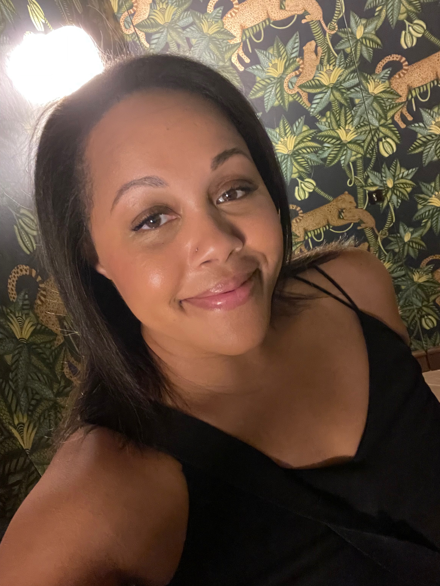

Laurel Wright

UX Designer + Frontend Developer
Amsterdam, Netherlands
Technical Skills
Contact
Summary
As an experienced developer and designer with over five years of
professional experience, I am seeking a new challenge as a Product
Designer. My recent experience as a Frontend Developer uniquely positions
me to provide a technical perspective to the design process. I thrive in
collaborative environments where everyone has a voice in the product
development process. I am seeking a dynamic setting that fosters
innovation, I am able to bridge the gap between technical feasibility and
user-centered design, contributing to a team that embodies the spirit of
creativity.
Professional Experience
Randstad Groep Nederland
Frontend Developer, February 2023 - Present
Diemen, Netherlands
-
Enhanced the user experience on the Ranstad and TempoTeam websites by
implementing style changes that improved usability across devices
-
Developed a React-based demo application for an internal training course
Data Sports Group
Frontend Developer, September 2021 - December 2022
Berlin, Germany
-
Worked on developing a new design and build of Global Sports Archive
with React and Next.js
- Wrote HTML/CSS code for content widgets
- Designed high-fidelity prototypes in Figma
Freelance Web Designer & Frontend Developer
LWROCKS, May 2018 - December 2022
Berlin, Germany
-
Built websites for small businesses including Mirjam Grupp and Mauj
- Wrote the HTML/CSS code for landing pages on Bet3000
- Designed a clickable prototype for MetaWealth
Online Marketing Manager
incapptic Connect, October 2017 - March 2018
Berlin, Germany
-
Oversaw the content development and redesign of the company website
-
Earned a first-page ranking on Google for the search term "automatic app
publishing"
-
Wrote blog content about topics including app lifecycle management,
continuous integration/continuous delivery (CI/CD) and enterprise app
stores
Marketing Project Manager
Americhip, May 2016 - April 2017
Los Angeles, CA, USA
-
Managed communication with external stakeholders including advertising
agencies and international vendors
-
Coordinated user research and testing for an in-store product selector
application
-
Collaborated with the creative and engineering teams on setting project
expectations and deadlines
- Wrote the content for product decks and sales materials
Achievements
Winner of the Ironhack Hackathon
15 February 2020
The challenge was to develop a new design concept for the accommodation
page on Craigslist using only HTML, CSS and vanilla JavaScript.
Best Innovation Award during the 2018 Geek Girls Carrots "Hack Like A
Girl" Hackathon
5 October 2018
The challenge was to develop a blockchain application using the SAP API.
We created smarter.vote, a tool whose goal is to provide transparency
during government elections.
Education
Purdue University
Bachelor of Arts, Communication Studies
August 2004 - May 2008
General Assembly
Short Course, User Experience Design
November 2015 - February 2016
Ironhack
Full-Stack Web Development Bootcamp
January 2020 - March 2020